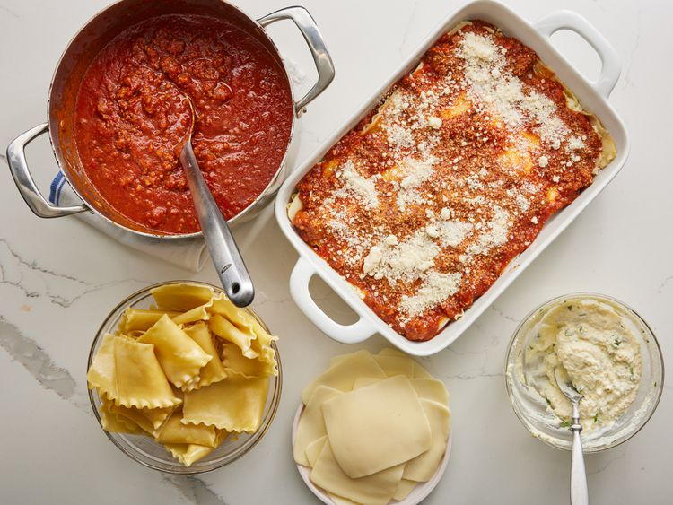
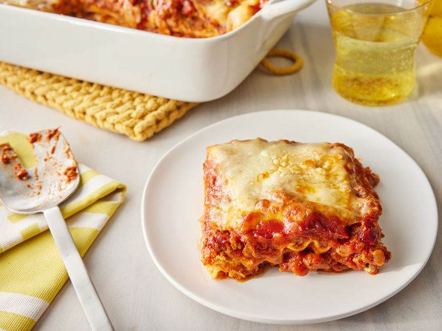

Home
Lasagna

Preparation information
-
Prep time:
-
Cook time:
-
Additional Time:
-
Total Time:
-
Servings:
Nutrition Facts (per serving)
- Calories: 448
- Fat: 21g
- Carbs: 37g
- Protein: 30g
Ingredients
- 1 pound sweet Italian sausage
- 3/4 pound lean ground beef
- 1/2 cup minced onion
- 2 cloves garlic, crushed
- 1 (28 ounce) can crushed tomatoes
- 2 (6.5 ounce) cans canned tomato sauce
- 2 (6ounce) cans tomate paste
- 1/2 cup water
- 2 tablespoons white sugare
- 4 tablespoons chopped fresh parsley, devided
- 1 1/2 teaspoons dried basil leaves
- 1 1/2 teaspoons salt, divided, or to taste
- 1 teaspoon Italian seasoning
- 1/2 teaspoon fennel seeds
- 1/4 teaspoon ground black pepper
- 12 lasagna noodles
- 16 ounces ricotta cheese
- 1 egg
- 3/4 pound mozarella cheese, sliced
- 3/4 cup grated Parmesan cheese
Directions
-
Gather all your ingredients.
-
Cook sasuage, ground beef, onion,
and garlic in a dutch oven over medium heat until well browned

-
Stir in crushed tomatoes, tomato sauce, tomato paste, and water.
Season with sugar, 2 tablespoons parsley, basil, 1 teaspoon salt, Italian seasoning, fennel seeds, and pepper.
Simmer, covered, for about 1 ½ hours, stirring occasionally.

-
Bring a large pot of lightly salted water to a boil.
Cook lasagna noodles in boiling water for 8 to 10 minutes.
Drain noodles, and rinse with cold water.

-
In a mixing bowl, combine ricotta cheese with egg, remaining 2 tablespoons parsley, and 1/2 teaspoon salt.

- Preheat the oven to 375 degrees F (190 degrees C).
-
To assemble, spread 1 ½ cups of meat sauce in the bottom of a 9x13-inch baking dish.
Arrange 6 noodles lengthwise over meat sauce, overlapping slightly.
Spread with 1/2 of the ricotta cheese mixture.
Top with 1/3 of the mozzarella cheese slices.
Spoon 1 ½ cups meat sauce over mozzarella, and sprinkle with 1/4 cup Parmesan cheese.

-
Repeat layers, and top with remaining mozzarella and Parmesan cheese.
Cover with foil: to prevent sticking, either spray foil with cooking spray or make sure the foil does not touch the cheese.

-
Bake in the preheated oven for 25 minutes.
Remove the foil and bake for an additional 25 minutes.

-
Rest lasagna for 15 minutes before serving.
